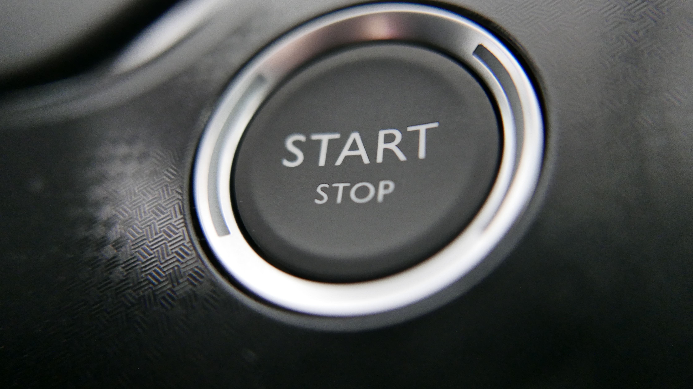

Home / Battery and electrical
Car Clicks But Won't Start: Battery or Starter?
Quick answer
Fast, repeated clicking usually means a weak or flat battery, one loud click then nothing points to the starter or its connection, and silence with no lights is often a dead battery or a bad terminal. Check the terminals, measure the voltage (about 12.6 V is healthy) and try a jump start before replacing the starter.

You turn the key and all you get is clicking. Before you call a tow truck or buy a starter, a few simple checks will usually tell you what's wrong.
When a car only clicks, I check the battery and its connections before I think about the starter. The starter gets blamed a lot, but I've seen it turn out to be corroded terminals or a weak battery that couldn't deliver enough current. A quick voltage test and a look at the clamps costs nothing and can save you from buying parts you don't need.
What the sound tells you
Fast, repeated clicking
This is the classic sign of a weak or flat battery. There's enough power to trip the starter relay but not enough to turn the engine, so it clicks over and over.
One loud click, then nothing
The battery may be fine, but the starter motor or its solenoid isn't turning. It can also be a poor connection on the starter cable.
No click and no lights
Usually a completely dead battery or a loose or corroded terminal.
Quick checks you can do in a minute
- Headlights and dash. Turn the lights on and try to start. If they go dim or off, the battery is weak.
- Terminals. Look for white or green crust and check the clamps aren't loose. A clamp that moves by hand needs tightening.
- Gear and clutch. Automatics should be in Park or Neutral. Manuals often need the clutch pressed.
- Key or fob battery. If the car doesn't react at all, try the spare key.
Once you've checked the terminals, the full procedure for reading the battery is in How to Test a Car Battery With a Multimeter.
Test the battery with a multimeter
A cheap multimeter set to DC volts, with the engine off, gives a good idea:
- About 12.6 V: healthy and fully charged
- About 12.4 V: roughly three-quarters charged
- 12.0 V or below: heavily discharged
With the engine running, a working alternator usually shows around 13.7 to 14.7 V. If it stays near 12 V while running, the battery isn't being charged.
The short list below is enough for a quick test. For a detailed walk-through with safety checks, read How to Jump-Start a Car Safely.
Try a jump start
If the battery is low, a jump start is the quickest test. Check your manual first, then:
- Park the donor car close, without the cars touching, and switch both off.
- Red clamp to the dead battery's positive (+) terminal.
- Other red clamp to the donor battery's positive (+).
- Black clamp to the donor battery's negative (−).
- Last black clamp to bare metal on the engine of the dead car, away from the battery.
- Start the donor car, wait a couple of minutes, then try the dead car.
- Remove the clamps in reverse order.
Safety note. Batteries can release explosive gas. Keep sparks and flames away, wear eye protection, and don't try to jump a battery that is cracked, leaking or frozen. Some modern cars have special jump points, so check the manual.
Reading the result
- Starts after a jump but dies again later: likely a worn battery or a charging problem.
- Still just clicks after a jump: suspect the starter or its connections.
- Starts fine after cleaning the terminals: that was it. Tighten them well.
How long batteries last
Typically around three to five years, depending on climate and use. Short trips, extreme heat and leaving things switched on all shorten it. On some modern cars, including many BMWs, a new battery should be registered with the car's electronics, so check the manual before swapping.
If the engine turns over normally but doesn't fire, you have a different problem; see Car Cranks But Won't Start. A red battery light while driving is covered in Battery Light On While Driving.
When to call for help
If a jump doesn't work, the terminals are fine and the battery tests well, have the starter and wiring checked by a professional.
FAQ
Why does my car click but not start?
Fast repeated clicks usually mean a weak or flat battery. One loud click often points to the starter or its connection.
Can a bad starter cause clicking?
Yes, especially a single loud click with bright headlights. Corroded terminals can mimic it, so check those first.
Will jump-starting fix a clicking car?
If the battery is the problem, usually yes. If it still just clicks after a jump, suspect the starter or the connections.
How do I know if it's the battery or the alternator?
A car that starts after a jump but dies again soon after often has a charging fault. Measure the voltage with the engine running.
This guide is general information based on personal experience, not professional advice. Check your own vehicle's manual for exact specs and read the disclaimer before starting any job.